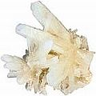

Perfuração & obturação de dentes: uma escolha imprudente?
Sobre riscos, danos e perigos, como também inúmeras razões para se evitar o tratamento dentário convencional invasivo
O tratamento dentário destrói dentes? Ironicamente, as práticas convencionais de odontologia, ao invés de curar, prejudicam seriamente os dentes e gengivas e, por extensão, potencialmente traz sério dano ao corpo inteiro. Em outras palavras, o trabalho realizado em sua boca pode significar, com frequência, dano pessoal.
Há um certo número de falhas fundamentais e problemas com o paradigma dental de perfurar e obturar, como se mostra na seguinte (não necessariamente exaustiva) lista de danos provocados ou potencialmente provocados por esses atos diários aparentemente auto-evidentes (e sim, tal dano pode incluir ...morte).
Bem-vindo a uma das mais importantes páginas de CuraDente!
Nota: riscos e danos adicionais específicos aos materiais individuais de obturação e tipos de restauração são tratado separadamente (veja Tratamento de canal: sobre os perigos potenciais à saúde, Pontes e coroas dentárias: o "coroamento" da glória odontológica, Outros riscos à saúde, relacionados às práticas da odontologia convencional e em inglês On the dangers of dental amalgam (mercury) "silver" fillings).
1. Perfuração e obturação de dentes: considerações gerais e objeções
Nada (ou quase nada) que um dentista faça curará realmente seu dente. Com muito maior probabilidade, isso aumentará, de fato, o dano para seu dente, visto que o dente é enfraquecido pela perfuração e o subsequente preenchimento com materiais artificiais (veja abaixo as inúmeras razões) Uma obturação normalmente não detém a cárie dentária e, uma vez preenchida, mais obturações e tratamentos parecerão necessários (a não ser que você decida livrar-se de todos os dentistas e tratar-se por si mesmo1). A amálgama e as resinas compostas apenas “consertam” o dente por algum tempo, visto que não há material restaurador capaz de proteger um dente de deterioração ulterior durante toda a sua vida. O ato diário da mastigação impõe grande pressão sobre o dente e a obturação, um dos dois poderá desenvolver (micro) rachaduras, sob a pressão.
Em suma: na maior das possibilidades, ter um dente obturado é o primeiro passo para finalmente perdê-lo.
2. Danos da perfuração/possivelmente matará os dentes e produz fraturas no osso.
Sobre danos ao dente, veja Dano à polpa (nervo interno), irritação da polpa, inflamação/infecção da polpa e morte da polpa.
A perfuração sempre produz rachaduras no osso, provendo assim um local perfeito para que bactérias se escondam e proliferem ali e finalmente causando infecções de cavitação.
3. A preparação de um dente para ser obturado remove estrutura dental saudável.
A fim de fixar bem uma obturação, o dentista perfura alguma da estrutura dental saudável, para permitir fixação adequada. Quando uma obturação é refeita (veja o próximo ponto), mais estrutura dental saudável é sacrificada durante a preparação do buraco.
4. As obturações costumam ter uma vida limitada.
De fato, um estudo datado de 1993, pela autora Monika Sinha, analisando os registros de tratamentos de cerca de 18.000 pacientes e várias centenas de dentistas, mostrou que uma em três obturações era refeita três anos depois da obturação original, no mais tardar, sendo substituída por uma nova obturação, por uma coroa ou até pela extração do dente. As obturações dentárias falham em razão de mudanças nelas mesmas, no dente ou ligação entre eles.
Não há relato de obturação que dure indefinidamente.* Obturações com ouro, quando bem feitas, diz-se poder durar potencialmente 30 anos/uma vida toda (em contraste com, por exemplo, blocos de ouro Classe II, 50% dos quais, segundo um estudo, acabam em sete anos).
Como mencionado no item 3) acima, quando a obturação é substituída, mais substância dentária saudável será removida, até que após várias de tais “rodadas alegres”, o dente se foi.
* embora haja exceções – embora consideradas dentre as obturações menos estáveis, tenho conhecimento de uma pessoa que continua com as mesmas obturações de composto por 30 anos (e continua) – e nos seus dentes sisos.
5 Contaminação bacteriológica adjacente a e abaixo das obturações causam novas cáries dentárias ("cáries secundárias").
Na junção entre a obturação (inclusive as “melhores”) e a existente dentina natural do dente, uma micro fenda residual é inevitável. Essa fenda ou selagem falha pode ser colonizada por bactérias streptococcus mutans ,que são impossíveis de remover com escovação*. Essas bactérias cariogênicas elevarão o risco de cáries e possivelmente deterioração do dente, embaixo. O processo de infiltração é ajudado, em seguida, pela expansão ou contração normal da obturação (veja o número 6, abaixo).
A deterioração na margem de uma obturação existente ou de uma coroa é diagnosticada tão comumente, que recebeu seu próprio nome: “cárie secundária” (ou deterioração recorrente). A cárie secundária é a causa mais comumente de falha em obturação e sua subsequente substituição e pode ser considerada o maior problema do paradigma de obturações.
Semelhantemente, muitas obturações têm de ser substituídas em razão de contaminação bacteriana deixada embaixo delas. Na verdade, a razão principal para tratamento de canais (que traz o sopro da morte ao dente, ao remover sua polpa) é a recorrência de bactérias embaixo da obturação. Esse é um fato conhecido, mas muitos/a maioria dos dentistas realiza a obturação do dente, de qualquer modo. Quando o alimento para essas bactérias consegue chegar até elas (ver o primeiro parágrafo dessa seção, sobre como isso é possível), isso matará o dente.
* mas possivelmente por Clorexidina antibacteriana, como também pelos anti-cariogênicos enxaguatórios com xilitol
6 As obturações se expandem ou se contraem.
Amálgama
As obturações “prateadas” se expandem com a idade. Em verdade, as amálgamas são capazes de rachar o dente. Os Drs. Graeme e Lilian Munro-Hall escrevem que "todos os dentes obturados com amálgama se racham; sem exceção”. Sobre outras consequências possíveis, ver abaixo o item Obturações/coroas mal ajustadas.
Resinas compostas
As resinas compostas encolhem. As fendas criadas pelo encolhimento convida à contaminação bacteriana (veja o número 5, acima). Os materiais compostos podem provocar rachaduras finas no dente, tão precocemente como no processo inicial de endurecimento. (Uma leitora me contou que um de seus dentes com obturação à resina composta, rachou pela metade,após algum tempo, da frente para a parte posterior e na base.)
Qualquer tipo de rachadura convida à infiltração e à posterior deterioração no dente.
7 As obturações se corroem, desgastam-se, dissolvem e liberam gás, levando à liberação de produtos & substâncias estranhas, às vezes com efeitos tóxicos
Não apenas alimentos, mas todos os materiais sofrem mudanças, nas condições severas da cavidade oral, liberando alguns de seus componentes, que são absorvidos pelo corpo.
Obturações Metálicas
Há mais de mil ligas dentárias diferentes* em uso (nenhuma delas foi testada quanto à segurança). A Lei de Faraday afirma que “metais distintos num ambiente úmido liberarão o metal menos precioso”. Em outras palavras, essas ligas metálicas irão se corroer e liberarão íons metálicos em sua boca (onde podem ser encontrados depositados nos dentes e gengivas) e no corpo (deglutição). Isso é considerado especialmente perigoso no caso de obturações com mercúrio (liberação de mercúrio). Outras como a de níquel (a partir de metais não preciosos como o aço inoxidável) podem ser antigênicas (isto é, estimularem a produção de um anticorpo). Além disso, a saliva constitui um “banho salino”, assim uma série de obturações metálicas podem gerar eletricidade mensurável (como numa bateria - dental galvanismo dentário) ou formarem uma estrutura eletromagnética artificial que afete o sistema de meridianos (energia) do corpo.
Poucos dentistas farão um teste de segurança como o MELISA, para verificar se uma mistura de metais que planejam usar tem probabilidade de ter um impacto negativo na saúde do paciente.5
* Uma liga é uma substância composta de dois ou mais metais intimamente misturados (Dicionário Webster's).
Obturações com Resinas Compostas
Obturações de resina composta são especialmente não resistentes ao desgaste pelo uso e pela liberação de gás, dissolução e/ou desgaste de resinas acrílicas, podem ou irão liberar muitos alérgenos em potencial/possivelmente substâncias tóxicas/possíveis carcinogênicos, inclusive compostos estrogênicos (BPA ou bisfenol A) na saliva do paciente (o mesmo se aplica às bases das dentaduras).
O desgaste será exacerbado se os dentes travarem e rangerem (verifique Bruxismo & dor da ATM: curas & remédios atóxicos sugeridos e em inglês Dental glossary: bruxism [Glossário dentário: bruxismo]).
8. Cimentos dentários podem ser tóxicos e danificarem o dente (acidez, vazamento e cárie dentária e morte do dente)
Cimentos que se apresentam numa variedade de tipos (cimentos com zinco, cimentos com policarbonato, composite cimentos compostos e muitos outros) são usados para várias aplicações dentárias (tais como revestimento de cavidade, insulação embaixo de obturações metálicas ou de cerâmica) e ajuda para fixação de obturações ao esmalte e/ou dentina.
Todos os cimentos dentários liberam fluoreto (tóxico)2. Por exemplo o cimento Viviglass afirma que seu produto “libera fluoreto constantemente”. Fugi Triage Cement vangloria-se de que seu cimento “libera 6 vezes a quantidade de fluoreto que qualquer outro cimento ionômico. "Além disso, a maioria dos cimentos temporários recebem sabor e cheiro de odorantes a base de esteres. Esses sabores são geneticamente modificados e produzidos para durar muito, como o são os cimentos liberadores de fluoreto. (Um dos visitantes do sítio web escreveu que o cimento permanente menos tóxico que também tem a menor liberação de fluoreto parece ser o RelyX Unicem. "Se houver outros que tenham baixo teor de liberação de fluoreto, não pude encontrá-los.")
Os cimentos dentários também liberam o metacrilato glicídico de bisfenol A (BIS-GMA) ou outras substâncias químicas, ou são eles ácidos.
Segundo os dentistas Drs. Munro-Hall, os tipos mais antigos de cimento geralmente "causam menos problemas de natureza sistêmica que os mais novos, mas os tipos mais antigos de cimento são mais ácidos e podem tornar os dentes sensíveis ou até causarem sua morte."
Além disso, os cimentos podem se dissolver gradualmente (uma propriedade menos pronunciada nos cimentos compostos, no entanto), com o subsequente vazamento da obturação e nova cárie dentária a começar embaixo. Esse processo de cárie secundária, que pode ocorrer muito rapidamente embaixo de obturações compostas geralmente parece ser freado, entretanto, no caso de obturações metálicas e muito provavelmente ocorre em razão da natureza tóxica das ligas metálicas nas obturações que, ao menos temporariamente inibe o crescimento de bactérias. Visto que os dentes são também nutridos pelo seu interior e por meio da saliva, a dieta de uma pessoa terá influência sobre quão rapidamente a cárie dentária se estabelecerá embaixo, também.
9. A polpa (nervo interior) pode ser danificada e irritada: podem resultar inflamação/infecção da polpa (inclusive infecção óssea) e sua morte.
Durante a perfuração e obturação, o dente fica sujeito a traumas múltiplos mecânicos e químicos o que poderá primeiramente inflamar e finalmente decretar a morte da polpa e assim do dente. O dano à polpa do dente e sua morte, por fim, podem ocorrer por caminhos variados.
a) Perfuração a alta velocidade
A perfuração a alta velocidade cria fraturas microscópicas e danos aos túbulos. Quando o esmalte é removido e micro rachaduras são criadas na dentina, o nervo interno frequentemente é prejudicado, geralmente matando o dente, no longo prazo, pela morte do nervo. (Se você observar essa foto em alta-ampliação da dentina), perceberá melhor como a perfuração a alta velocidade pode, verdadeiramente, prejudicar essas estruturas delicadas.)
b) Perfuração demasiadamente rápida
"Indo além do limite de velocidade" (por exemplo, durante o trabalho preparatório para uma ponte ou coroa*) criará calor excessivo. (A autora Rosemarie Mieg escreve que para por uma coroa, os dentes necessitam ser enchidos durante 20 minutos, para se evitar o superaquecimento e a consequente morte da polpa.)
* Ver Pontes e coroas dentárias: o "coroamento" da glória odontológica.
c) Remoção de esmalte em excesso
O dentista Dr. Graeme Munro-Hall escreve, "A remoção do esmalte e produção das micro rachaduras na dentina, muito frequentemente, mas nem sempre, prejudica o nervo interno. O dano pode causar a morte lenta do nervo, durante anos, permitindo que haja infecção. Essa infecção pode se espalhar do dente para o osso e causar condições agudas, dor e abcessos, como também infecções crônicas indolores no dente e osso. O superaquecimento do dente durante a perfuração pode criar as mesmas condições, também, para o nervo ou polpa. Todas as infecções criam uma carga tóxica...quanto menos esmalte for retirado de um dente, ao prepará-lo para uma coroa ou ponte, maior a chance de sobrevivência desse dente...a aplicação de coroa deveria ser a última escolha...não a primeira.”
Os vernizes costumam provocar a morte da polpa (a cobertura com verniz remove mais da metade do esmalte dentário).
d) A colocação de blocos ou coroas
pode causar inflamação do nervo, levando o dentista a desvitalizá-lo. Em verdade, a colocação de coroas costuma provocar a morte da polpa. A morte da polpa, após o uso de coroa constitui a razão principal de extrações posteriores. Compare com os itens b) e c) acima e obturações e coroas mal ajustadas mais abaixo.
e) Causticação de dentes com ácidos
Os dentes são causticados com ácidos para permitir que a obturação se cole à estrutura saudável do dente. Isso também permite que bactérias penetrem no interior do dente, onde elas podem provocar grave inflamação.
f) Adesivos
Sistemas de cola usados para juntar a obturação ao dente podem danificar a polpa e levá-la à morte.
g) Materiais restauradores
Os compostos dentários podem irritar/danificar o nervo (polpa). Quando o trabalho não é feito com cuidado, o ácido mais o material restaurador usado, podem ter um efeito tóxico, levando à morte do dente.
h) Vibrações da broca / manuseio de instrumentos dentários
A polpa do dente pode ser morta pelas vibrações da broca. Até outras ferramentas manejadas por dentistas podem provocar tal dano à polpa que leve à sua necrose.
10 A perfuração ajuda bactérias cariogênicas a rapidamente penetrarem em profundidade
...mais rapidamente do que poderiam elas penetrar por si mesmas, para destruírem o dente (levando-se em conta que nenhuma ação pró-ativa seja tomada por você e seu corpo para pará-las, em primeiro lugar). Segundo o autor Dr. Lars Hendrickson, até mesmo se nenhuma ação pessoal for tomada para fortalecer o dente contra a progressão da cárie, você nunca perderia um dente tão rapidamente como ocorrerá, ao apelar pela “ajuda” do dentista. A cárie dentária em adultos costuma se espalhar muito lentamente, de sorte que, geralmente, não há perigo a se falar.
11 As obturações metálicas absorvem e reemitem micro-ondas.
Segundo o especialista Barrie Trower, todas as obturações, seja de amálgama, ouro ou implantes de titânio4 na boca (em verdade, qualquer metal dentro do corpo) absorverá micro-ondas e as reemitirão para dentro do corpo, geralmente num comprimento de onda um pouco diferente, o que poderá resultar num efeito interno bem grave de aquecimento. O sofrimento de sensações semelhantes a pinos-e-agulhas muito provavelmente é causado por isso.
12 Compostos dentários e sistemas de junção podem danificar as gengivas.
13 Os ingredientes dos compostos dentários favorecem bactérias.
As resinas compostas contêm ingredientes que facilitam a fixação bacteriana ao dente e à margem da gengiva. A supracitada cárie secundária que se desenvolve na margem do dente é especialmente predominante nas restaurações com resina composta. Alguns compostos mais antigos, a base de resina feita com TEGMA aparentemente favorecem o crescimento microbiano, isto é, mais cárie dentária embaixo da obturação.
14 Os materiais restauradores e cimentos podem emitir radioatividade de baixa intensidade.
Alguns tipos de obturações (por exemplo cerâmica dentária [porcelana aka] usadas em coroas, pontes e vernizes) como também cimentos, emitem radioatividade de baixa intensidade. Como exemplo, a Organização Internacional de Padronização (ISO) permite um valor máximo de 1,0 Bq/g para materiais cerâmicos usados em restaurações dentárias (ver ISO 6872).
15 Riscos e perigos variados observados no tratamento de perfuração e/ou obturação (inclusive morte na cadeira do dentista)
Riscos da anestesia odontológica (injeções odontológicas de rotina)
A a injeção de um anestésico local causou dano permanente ao nervo/dano irreparável ao nervo (como o nervo lingual e o nervo alveolar inferior, inclusive entorpecimento e perda do paladar), nevralgias do trigêmeo e até paralisia facial permanente.
As injeções dentárias podem dar início a uma perigosa infecção de cavitação em sua mandíbula e/ou maxilar.
Efeitos colaterais de anestesia incluem reações alérgicas (até mesmo choque alérgico), rouquidão, dificuldades crônicas para engolir, náusea e êmese (vômito), e morte na cadeira do dentista (sim, faça uma pesquisa na internet, como exemplo, o número de pessoas que morrem cedo numa cadeira de dentista na Alemanha é estimado em 1000).
Raios-X dentários e câncer
Os raios-x dentários têm um papel de contribuição para o câncer de tiroide e outros (mais em A radiação ionizante de raios-X dentários e o aumento de risco de câncer da tiróide).
Obturações mal ajustadas/coroas mal colocadas
Possivelmente mais comumente que se aceita, as obturações mal ajustadas ou coroas mal colocadas levarão a problemas com a mordida (má oclusão), tornam os dentes sensíveis à dor, podem provocar dor no pescoço e nas costas, zumbido nos ouvidos (um caso de zumbido que soube por leitura, envolvia um francês e foi curado, após anos de intenso sofrimento, quando a má oclusão de seus dentes, devida a obturações metálicas mal colocadas, foi finalmente resolvida), como também enxaqueca e incapacidade de dormir (acordando com dor, repetidas vezes, quando a boca se fecha, involuntariamente). (Com relação a coroas, compare também b), c) e d) acima, como também a página especificamente dedicada aos Riscos & complicações da colocação de coroa dentária.)
Efeitos nos tecidos adjacentes
Dentes/gengivas vizinhos podem ser danificados, a perfuração pode ferir membranas mucosas, a língua e tecido ósseo (ver número 2: "Fraturas ósseas " acima).
Alergias, infecções, septicemia
Alergias ou hipersensitividade em resposta a substâncias químicas usadas pelo dentista (como desinfetantes) podem ocorrer. Pode ser provocada uma inflamação do corpo inteiro.
Doenças periodontais
Problemas nas gengivas, inclusive perda de dentes pode ser provocada.
Morte na cadeira do dentista
O fato de que algumas pessoas, inclusive crianças, morrem na cadeira do dentista (como é o caso, ao receber anestesia, ver acima) é também “ajudado” pelo fato de que muitos/a maioria dos consultórios parece não ter o equipamento necessário, medicamentos e guias de emergência para lidar com emergências médicas (como defibriladores externos automáticos, monitores de sinais vitais, kits com drogas de emergência e oxigênio portátil) e/ou as habilidades e treinamento para lidar com emergências e máquinas e assim incapazes de prover apoio básico à vida, a ressuscitamento cardio-pulmonar e o que mais for necessário para salvar uma vida.3
Poder-se-ia pensar que os dentistas ganham dinheiro suficiente para investir uma parte em tais "casualidades".
16 Último - mas longe de ser o menos importante – os diagnósticos dos dentistas em sua maioria são errados.
Veja "Dez dentistas – dez diagnósticos": estudos sobre diagnósticos falhos ou a qualidade, honestidade & duplicabilidade dos planos de tratamento dos dentistas e O diagnóstico e plano de tratamento do seu dentista...honesto e duplicável ou influenciado por interesses financeiros? Pesquisa adicional sobre a honestidade & qualidade das decisões de tratamento dos dentistas.
Notas de pé de página
1 Compare Conselho sobre o que fazer quando você não pode ou não quer ir ao dentista.
2 Ver Os efeitos danosos da fluoretação: água e pasta de dentes fluoretados prejudicam os dentes e o corpo.
3 Mais procedimentos odontológicos que levaram à morte de pacientes são discutidos em Extrações dentárias: riscos e perigos potenciais à saúde [inclusive morte], Riscos potenciais da cirurgia do implante: da falha do implante ao dano irreparável ao nervo, e Tratamento de canal: complicações potenciais {de curto prazo} inclusive dano cerebral irreversível e morte.
4 Compare Riscos potenciais da cirurgia com implante dentário.
5 Informação sobre o teste MELISA em Dr. Klinghardt sobre a toxicidade dentária.